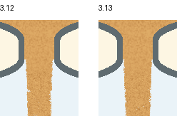
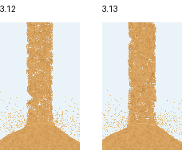
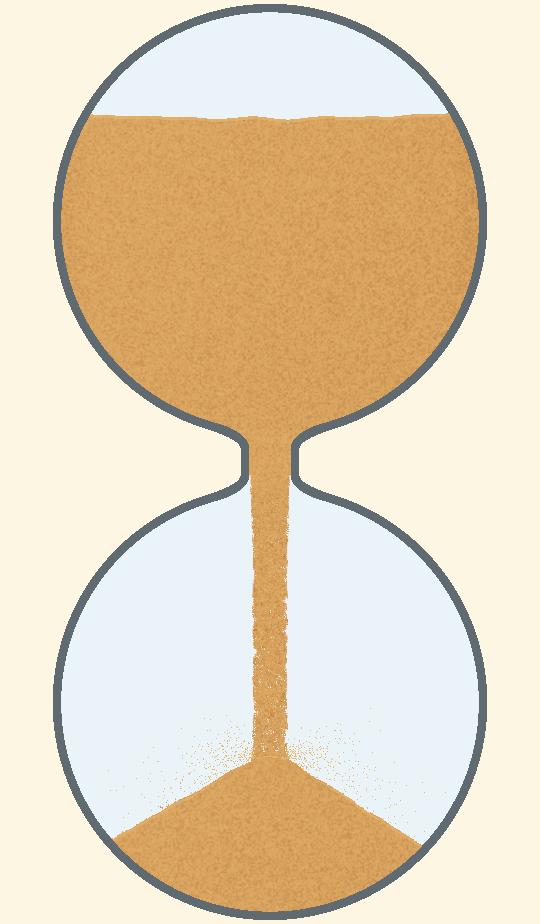

3.13 出口宽度与下段收口
本轮限定外观独立复审及发布门禁通过。证据绑定3.13冻结源码，旧失败记录保留。
本轮一起处理出口骤窄、材质分界和下段局部掐腰。出口去除重复内缩并保留防穿壁约束；下段让实际下落颗粒的绘制覆盖更连续，细档补回缩小图元后损失的覆盖面积，内部细粒保持原来的像素形状。
颈宽、玻璃、沙量、计时、发射数量、实际纵向运动和3.3飞溅模型保持。横向出生位置修正会影响落点和后续飞溅，因此不声称新旧所有物理数组逐位相同。




真实运行过程
隐藏PC窗口与独立设置采集，均含暂停、恢复和落定，无声。视频采集负载不用于判断帧率。
1秒短周期过程
量宽与复审范围
同条件连续61帧，出口下0.1～0.25个口径处的主体宽：50秒由37/42像素改善为39/42像素，5秒由58/62改善为60/62。固定92%中位门槛保持；旧50秒明确失败，旧5秒本来达到门槛，作为不退化对照。数值不能代替外观判断。
正式证据覆盖1/5/50秒、六配色粗细端档、开局、首次落地、暂停恢复、近满和排空；单独的同态沙柱图像排除飞溅对量宽的影响。独立复审必须同时看正常尺寸与连续窗口，不能以帧数、非空或粒子身份代替自然观感。
仅加宽、8分区出生及固定覆盖的小样都保留了拒绝证据，未混作通过。细档新增面积补偿后重新冻结并重录，旧源码批准不复用。默认档与上一个小样的61帧对照最大RGB差1级，属于uniform计算的细微差异，没有声称逐像素完全相同。
本轮仅PC外观与相邻状态，不代表Android、音频或性能验收。原有短周期快速涨堆、开局前缘偏平等表现仍需另行评估；本轮不能解释为全应用无问题。
证据清单与当前结论 · 独立外观复审 · 独立代码复审 · 计划及小样修订 · 保留的3.12失败反馈